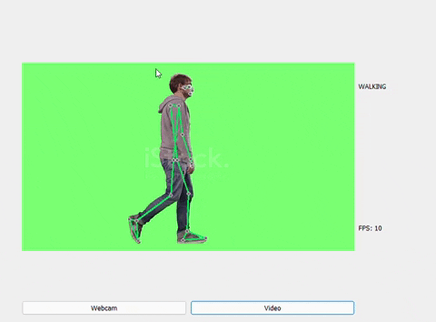

01 / THE PROBLEM
Why build it?
Video contains movement information that is difficult to inspect frame by frame. Pose keypoints can make a bounded activity-analysis workflow more structured.
COMPUTER VISION / ENGINEERING PROJECT
From movement to structured observations.

Multi-person pose estimation with activity labels, visual overlays, and structured keypoint export.
View source on GitHub ↗01 / THE PROBLEM
Video contains movement information that is difficult to inspect frame by frame. Pose keypoints can make a bounded activity-analysis workflow more structured.
02 / THE IMPLEMENTATION
The project uses YOLOv8-Pose to estimate COCO-17 keypoints. Rule-based joint-angle and movement logic produces activity labels such as standing, sitting, walking, and running, with CSV export.
A GOOD PLACE TO START